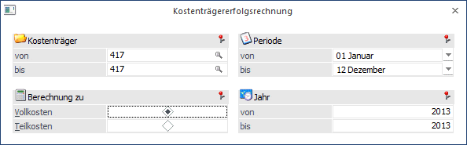
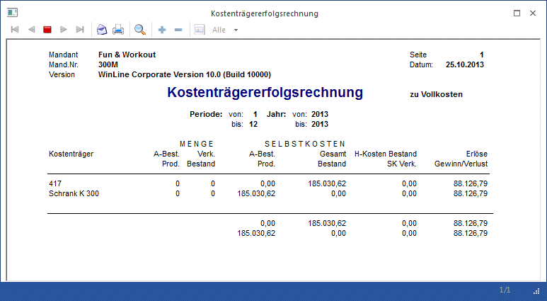

Die Kostenträgererfolgsrechnung wird im Menüpunkt
1 Auswertungen
1 Kostenträgererfolgsrechnung
gestartet.
Die Auswertung berechnet auf Basis des im Kostenträgerstamm hinterlegten Anfangsbestandes (mengen und wertmäßig) sowie aufgrund der in der FAKT gebuchten Bestandsveränderungen (Zu- und Abgänge) - sofern der Kostenträger mit einem Artikel (siehe Artikelstamm, Register "Lager") verknüpft wurde - den Gewinn bzw. Verlust des Kostenträgers.

Ø Kostenträger
Mit Hilfe des Matchcodes erfolgt die Auswahl des Kostenträgers von - bis. Außerdem wird geprüft, ob der Benutzer die Berechtigung hat (WinLine KORE/Stammdaten/Kostenträger), den eingegebenen Kostenträger zu verwenden.
Ø Periode von-bis
Auswahl, welche Periode ausgewertet werden soll (alle, von Monat - bis Monat, oder jedes Monat einzeln).
Ø Jahr von - bis
Hier kann ausgewählt werden ab welchem Wirtschaftsjahr, bis zu welchem Wirtschaftsjahr ausgewertet werden soll.
Ø Berechnung zu
Es kann eine Auswahl zwischen Berechnung zu Vollkosten oder zu Teilkosten erfolgen.
ü Vollkostenrechnung
Alle Kosten
(variable und fixe) werden vollständig verrechnet.
ü
Teilkostenrechnung
Kostenrechnungsmethode, bei der die variablen
Kosten direkt verrechnet werden. Direkte Kosten sind alle Einzelkosten sowie die
variablen Gemeinkosten.
Berechnung der Werte
MENGE:
A-Best.: Menge aus dem Feld Artikelvortrag/Einheit aus dem Kostenträgerstamm
Prod.: Mengenmäßiger Zugang des in der FAKT mit dem Kostenträger verknüpften Artikels
Verk.: Mengenmäßiger Abgang des in der FAKT mit dem Kostenträger verknüpften Artikels
Bestand: A-Best + Prod - Verk
SELBSTKOSTEN
A-Best.: Wert aus dem Artikelvortrag
Prod.: mit dem Kostenträger erfasste Kosten x Zuschlagssatz
Gesamt: A-Best + Prod
Bestand: Produktionskosten / produzierte Menge *
HK Bestand: Einzelkosten pro produzierter Menge x Bestandsmenge
SK Verk: Selbstkosten Bestand / Menge Bestand * Menge Verk
Erlöse: Erlöse der verkauften Einheiten
Gewinn/Verlust: Erlöse - SK Verk.
